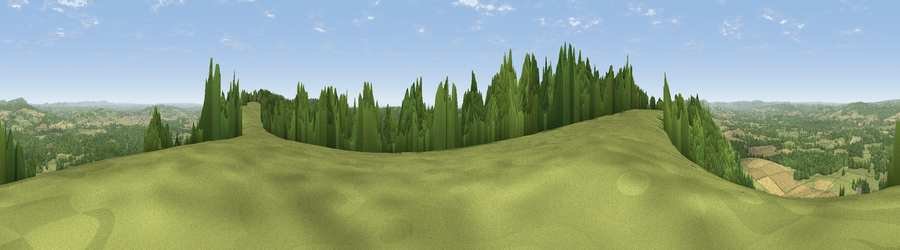

Heyshott Down
#2713 in England · top 7% of its area beats it · near HeyshottWhere it is
The exact computed spot (SU 90028 16674). Click the marker for map links.
The view, rendered

A 360° render of this exact spot computed from the terrain model, tree cover and land cover — summer colours, afternoon light, calibrated against photographs of famous viewpoints. Real trees, hedges and buildings will differ in detail.
The panorama
Grey silhouette: terrain skyline in each direction (720 bearings, Earth curvature and refraction included). Dashed green: skyline with trees (+15 m) and buildings (+8 m) as obstacles. Blue strip: how far the ground is visible on each bearing.
Where the view opens
Wedge length = distance to the farthest visible ground on that bearing (vegetation-aware). Rings at 10, 25 and 50 km.
What fills the view
34% woodland · 33% grassland · 31% cropland ·
Angular shares of the visible panorama (visual magnitude), not map area. Landscape diversity 0.51 (0–1 Shannon).
Key numbers
More beautiful places nearby
The staircase of upgrades: each row has a higher view potential than everything closer. Driving times are estimates from straight-line distance, calibrated against real road routing — check an actual route before setting out.
| Place | Direction | Drive | Score |
|---|---|---|---|
| Viewpoint near Cocking | W · 1 km | ~3 min | 77.6 |
| Viewpoint near Cocking | W · 1 km | ~4 min | 78.3 |
| Linch Down | W · 5 km | ~11 min | 85.2 |
| Beacon Hill | WNW · 9 km | ~18 min | 85.8 |
| Chanctonbury Ring | ESE · 24 km | ~40 min | 87.0 |
| Viewpoint near St. Lawrence | SW · 53 km | ~75 min | 88.2 |
| Viewpoint near Niton | SW · 57 km | ~79 min | 89.2 |
| Viewpoint near West Bexington | WSW · 138 km | ~162 min | 89.5 |
50.94249, -0.71997 · source: osm peak · position refined by local search. Computed location — check access rights before visiting.